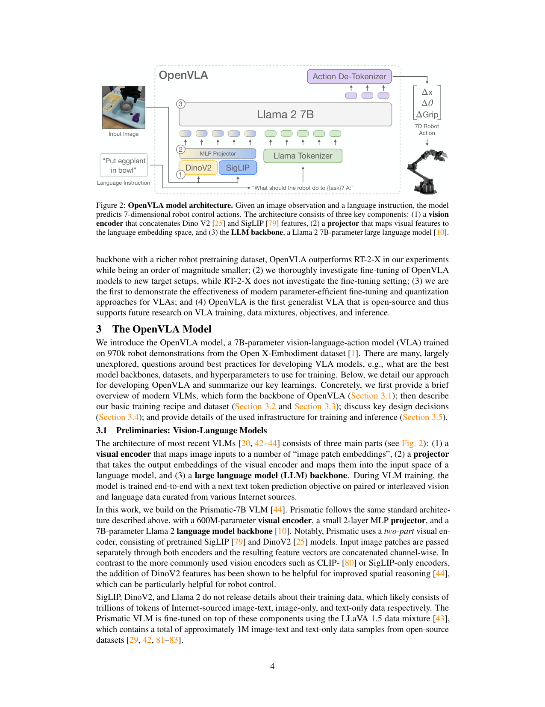
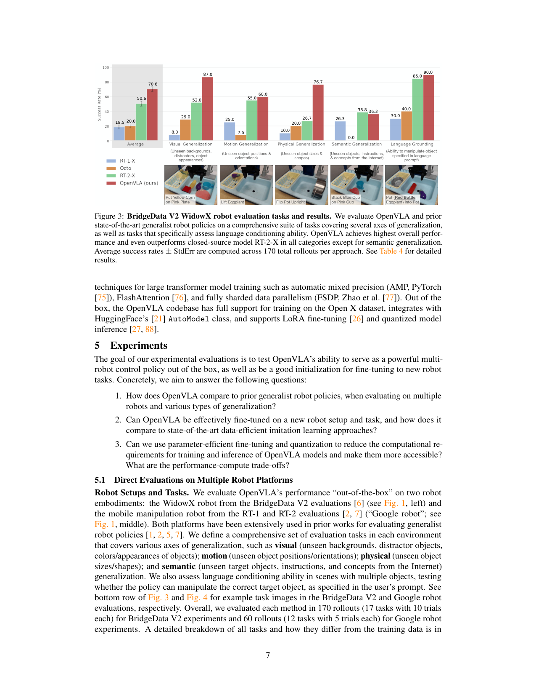
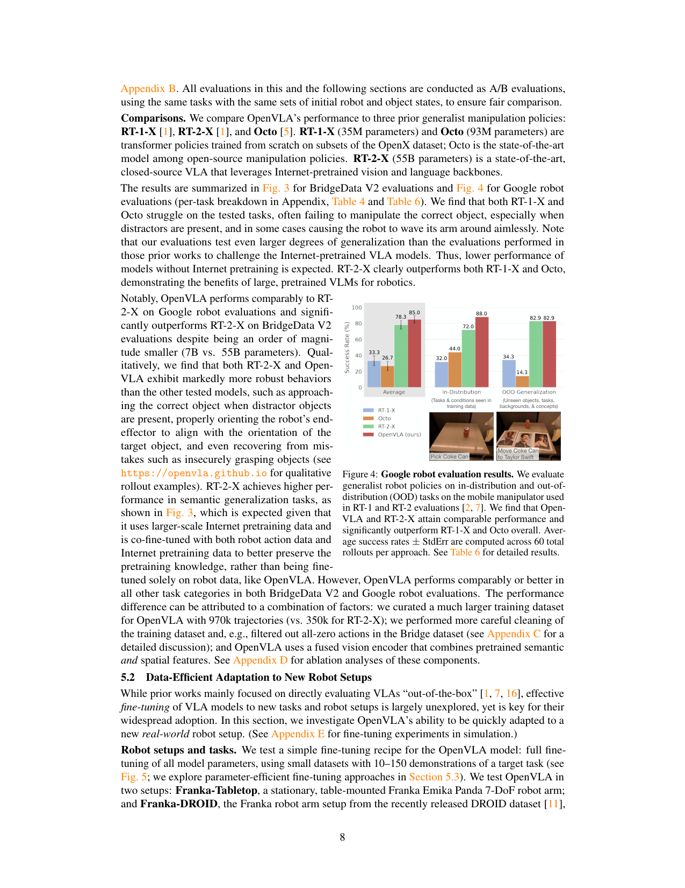
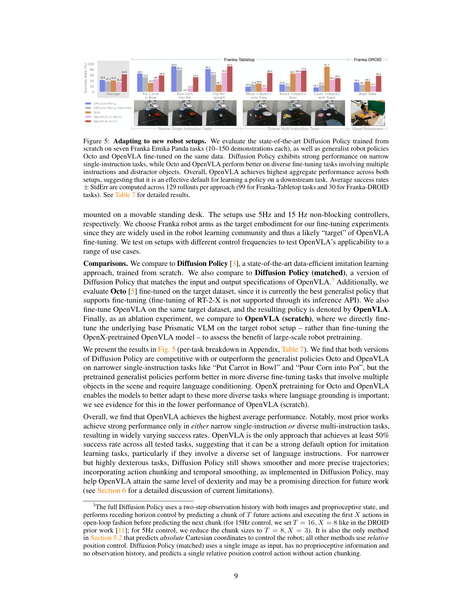
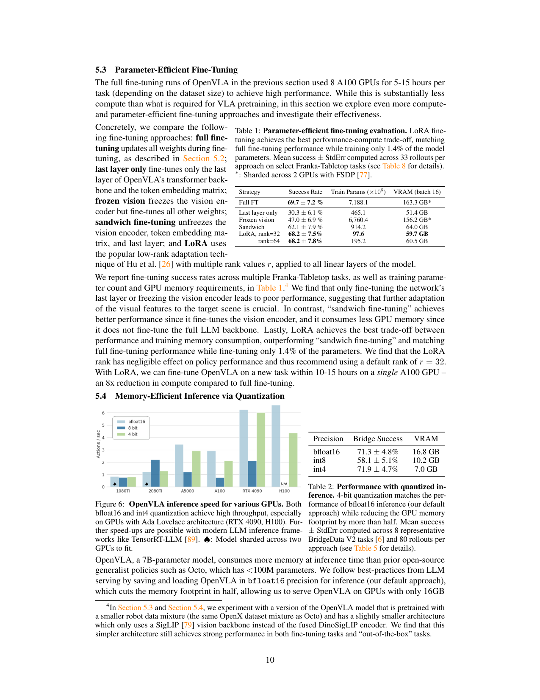
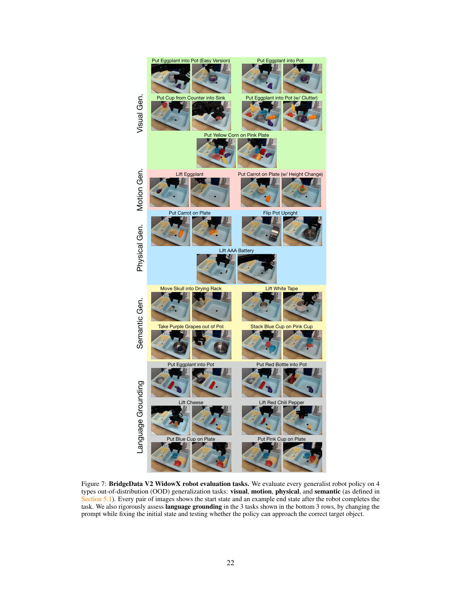
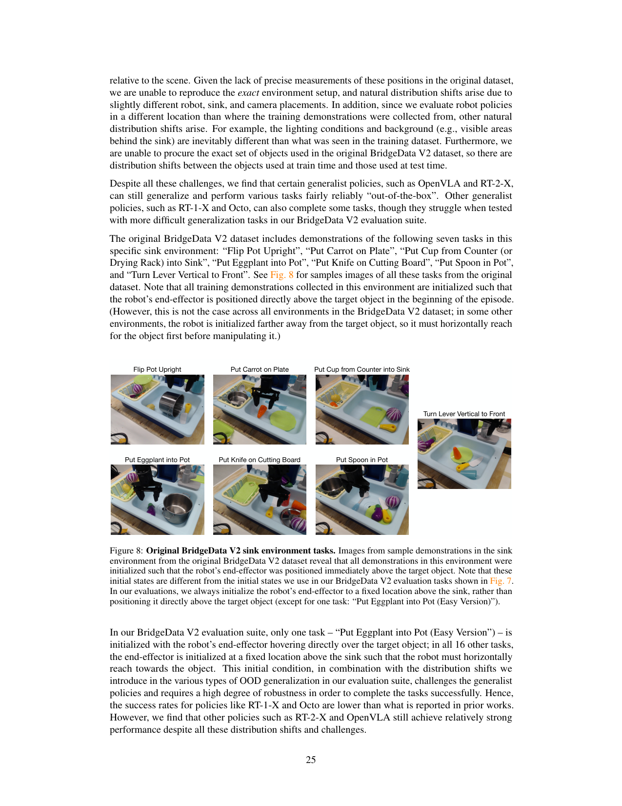
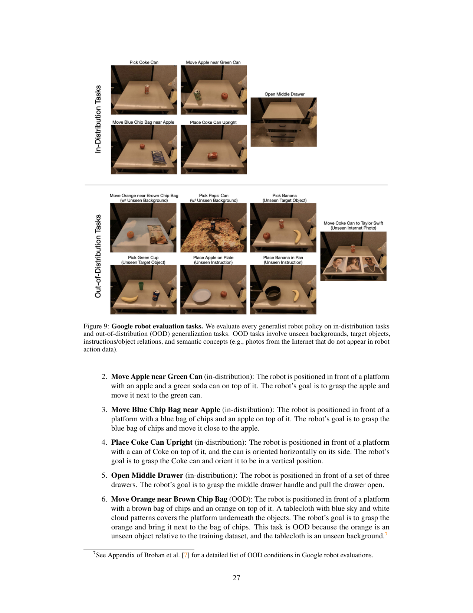
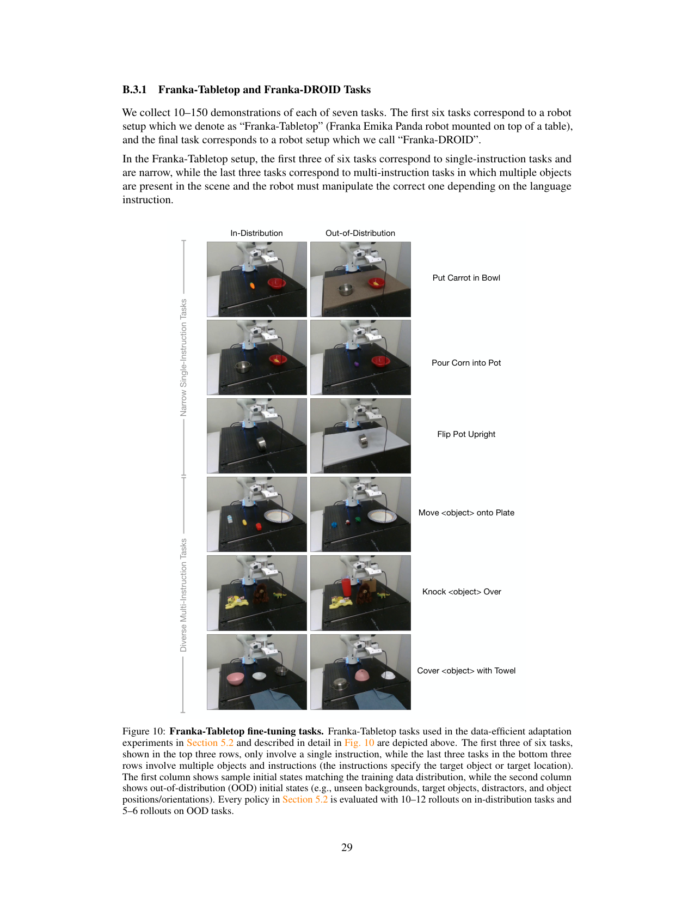
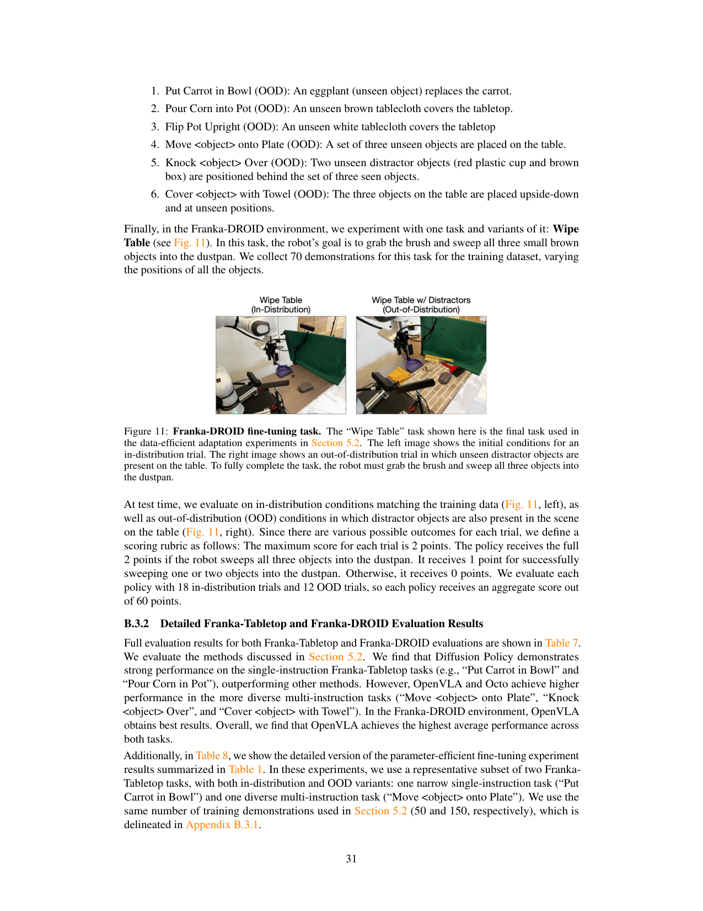

把 Prismatic-7B VLM(DINOv2+SigLIP 融合视觉编码器 + Llama 2 7B)在 970k Open X-Embodiment 机器人轨迹上 fine-tune,把 7 维连续动作离散成 256 个 token 塞进 LLM 词表用 next-token 预测训,一个 7B 开源 VLA 在 29 任务上超 55B 闭源 RT-2-X 16.5 个点,且支持 LoRA(1.4% 参数)和 4bit 量化在消费级 GPU 上 fine-tune 和推理。
问题
要解决什么：VLA(如 RT-2-X)展现了通用机器人策略的潜力,但有两个阻碍广泛采用的硬伤:1)现有 VLA 全闭源,架构/训练/数据混合不公开;2)prior work 没探索如何高效 fine-tune VLA 到新机器人/任务,尤其消费级硬件。作者要做一个完全开源(数据+权重+代码)的 VLA,并系统研究 fine-tune 和量化部署。
为什么 prior work 不够：RT-2-X 55B 闭源且不支持 fine-tune(只给推理 API);RT-1/Octo 虽部分开源但用 from-scratch 训练(stitch 预训练组件),没充分利用 VLM 的 Internet-scale 先验;prior VLA 工作都没研究 LoRA/量化这类参数高效方法。OpenVLA 的解法是直接 fine-tune 一个强开源 VLM(Prismatic-7B,已融合 DINOv2 空间特征+SigLIP 语义特征)做动作 token 预测,简单可扩展,且把 LLM 生态的 LoRA/量化工具直接搬过来。
输入 / 输出
输入
| 名称 | 类型 | 说明 |
|---|---|---|
| image observation | image | 单张 224×224 RGB(第三人称视角);无多视角无历史帧(论文列为局限) |
| language instruction | text | 任务指令,经 Llama tokenizer;模板 'What should the robot do to {task}? A:' |
| proprioceptive state | vector | 默认不用(论文 ablation 表明视觉已含足够信息);Franka fine-tune 时也不喂 proprio |
输出
| 名称 | 类型 | 说明 |
|---|---|---|
| robot action | discrete token → continuous | 7 维单步动作(Δx, Δy, Δz, Δroll, Δpitch, Δyaw, gripper);每维离散成 256 bin(用 1%/99% 分位定 bin 宽),映射到 Llama 词表 256 个 token;预测后 de-tokenize 回连续值;无 action chunk(单步预测) |
控制频率：推理 ~6Hz(RTX 4090,bfloat16,无编译/推测解码);4bit 量化后 A5000 上 3Hz;训练时 BridgeData V2 5Hz、DROID 15Hz;无 action chunk 故每步都要推理
输入拼接 protocol
<bos_img>[DINOv2(patch) ⊕ SigLIP(patch)] → MLP Projector → visual tokens (224×224 → ~256 patch token)]<eos_img><bos_lang>What should the robot do to {task}? A:<eos_lang><bos_action>[a_1, a_2, a_3, a_4, a_5, a_6, a_7] (7 个离散 action token,每 ∈[0,255])<eos_action>
逐 token 解释:三个坑:(1) language 和 action 都是 LLM 的序列 token,统一自回归——这点和 π0.7/Qwen-VLA 不同,后两者 action 是 DiT 连续张量;(2) 多视角不支持,单图输入,论文自承是局限;(3) 训练和推理序列一致(都单图+语言→7 action token),但训练用 GT action teacher forcing,推理用模型自回归生成 7 个 token 再 de-tokenize;无 action chunk 意味着每步都要完整前向,6Hz 是单步延迟。
数据集
| 数据 | 规模 | 备注 |
|---|---|---|
| Open X-Embodiment(主) | 970k 轨迹 | 从 70+ 机器人数据集筛选:单臂末端控制+至少 1 第三人称相机;用 Octo 的 mixture weight 平衡本体/任务/场景;DROID 试过 10% 权重但 action token accuracy 低,后 1/3 训练移除 |
| Prismatic-7B 预训练(VLM 阶段) | LLaVA 1.5 混合 ~1M | image-text + text-only,开源数据;DINOv2/SigLIP/Llama 2 各自 Internet 预训练(闭源数据) |
架构（摘要）
主干与结构
backbone：Prismatic-7B VLM = DINOv2 + SigLIP 融合视觉编码器(600M)+ 2 层 MLP projector + Llama 2 7B LLM
参数：7B(Llama 2 7B 主导);视觉编码器 600M;projector 小(2 层 MLP)
类型：VLA:VLM fine-tune + 离散 action token next-token 预测(无 action chunk,无 DiT,无 flow matching)
关键组件
- 视觉编码器(600M,DINOv2+SigLIP):输入 224×224,分别过 DINOv2(patch 14,低层空间)和 SigLIP(patch 14,高层语义),patch 特征 channel-wise concat;DINOv2 加空间推理能力,SigLIP 加语义泛化
- MLP Projector(2 层):把融合视觉特征映射到 Llama 词嵌入空间,作为 visual token 进 LLM
- Llama 2 7B LLM backbone:标准 transformer,处理 visual token + 语言 token,自回归预测 7 个 action token
- Action discretization:7 维动作每维 256 bin,1%/99% 分位定 bin 宽(抗 outlier),覆写 Llama 词表最后 256 token
- Action de-tokenizer:把预测的 7 个离散 token 映射回连续 7 维动作值
- 无 action expert / DiT / flow matching:动作直接走 LLM token 通道,简单可扩展
为什么这样设计
三个理由选 VLM fine-tune + action token 路线:(1)在 Internet-scale VL 数据上对齐视觉和语言组件,继承 web 先验;(2)用通用 VLM 架构而非定制机器人架构,可借 LLM 训练基础设施(FSDP/AMP/FlashAttention)和生态(LoRA/量化/HuggingFace),最小代码改动 scale 到 billion 参数;(3)给机器人一条直接受益于 VLM 快速改进的路径。选 Prismatic-7B 因 DINOv2+SigLIP 融合在多物体语言 grounding 任务比单 SigLIP/CLIP 强约 10%,且代码模块化。离散 action token 而非连续 head 因简单——直接用 next-token cross-entropy,无需 DiT/flow matching 额外组件。这是'最简单可扩展的 VLA'设计哲学。
数值 sense
| 项 | 值 |
|---|---|
| dit_vlm | Llama 2 7B:32 layers × 32 heads,hidden 4096,ffn 11008;标准 transformer decoder |
| dit_action | 无独立 action expert;action 走 LLM token 通道,7 token/步 |
| vision_encoder | DINOv2-base(patch 14,embed 768)+ SigLIP(patch 14,embed 1152)→ concat → MLP 投到 Llama 4096;共 600M |
| 分辨率 | 224×224(试过 384 无性能差异但训练慢 3×,故选 224) |
| VAE | 无 VAE;视觉编码器直接出 patch token |
| 每帧 latent 维 | 224×224 / patch14² → ~256 patch token/视角(DINOv2+SigLIP 各一);concat 后经 MLP 投到 4096 |
| Chunk | 无 action chunk;单步 7 token 预测;无 receding horizon 控制(论文自承是局限,Diffusion Policy 用 T=16/X=8 chunk) |
| 上下文 | 单图 + 单语言指令;无历史帧无 episodic memory(论文列为未来工作) |
| 动作 | 7 维单步:Δx,Δy,Δz(3 位移)+Δroll,Δpitch,Δyaw(3 Euler)+gripper(1 二值);每维 256 bin,1%/99% 分位归一化;WidowX/Google Robot/Franka 7-DoF 单臂末端控制 |
| 训练 | 64×A100 × 14 天 = 21,500 A100-hours;batch 2048;27 epochs;lr 2e-5 固定无 warmup;action token accuracy 训到 95%+;fine-tune vision encoder 至关重要(冻结掉性能);FSDP+AMP+FlashAttention |
→ 详见 Architecture tab。
关键结果
| 指标 | 值 | 最强 baseline | setup |
|---|---|---|---|
| BridgeData V2 WidowX 17 任务平均 | 70.6% | 50.6% (RT-2-X 55B) / 20.0% (Octo) / 18.5% (RT-1-X) | 170 rollouts,5 类泛化+language grounding |
| Google Robot 12 任务(in-distribution) | 85.0% | 88.0% (RT-2-X) / 33.3% (RT-1-X) / 44.0% (Octo) | 60 rollouts |
| Google Robot OOD | 78.3% | 72.0% (RT-2-X) / 26.7% (RT-1-X) / 32.0% (Octo) | 未见物体/任务/背景/概念 |
| 29 任务总平均超 RT-2-X | +16.5% absolute | 55B RT-2-X(闭源) | WidowX+Google Robot,7B vs 55B |
| Franka fine-tune 7 任务 aggregate | OpenVLA 最高,所有任务 ≥50% | Diffusion Policy(窄任务强)/Octo | 10-150 demonstrations,Franka-Tabletop+DROID |
| OpenVLA vs Diffusion Policy(from scratch) | +20.4% 在多物体语言 grounding 任务 | Diffusion Policy | Franka fine-tune,多样多指令任务 |
| LoRA fine-tune(rank=32) | 68.2% 成功率 | 69.7% (full FT,统计持平) | Franka-Tabletop,1.4% 参数,单 A100 10-15h |
| 4bit 量化推理 | 71.9% 成功率 / 7.0GB VRAM | 71.3% / 16.8GB (bfloat16) | BridgeData V2 8 任务,80 rollouts |
| 推理频率 | ~6Hz (RTX 4090, bfloat16) | — | 无编译/推测解码 |
| 训练算力 | 21,500 A100-hours(64×A100 × 14 天) | — | batch 2048,27 epochs,970k 轨迹 |
Insights
- 简单设计+更多数据胜过堆参数:7B OpenVLA 在 29 任务超 55B RT-2-X 16.5 个点,因 970k vs 350k 数据 + DINOv2/SigLIP 融合视觉编码器 + 更仔细数据清洗(Figure 3/4)。VLA 不是越大越好,数据和视觉编码器质量更关键。
- VLA 训练反 LLM 直觉:27 epoch(LLM/VLM 通常 1-2)、fine-tune vision encoder(VLM 习惯冻结)、lr 2e-5 无 warmup。这些 recipe 发现给后续 VLA 工作基线参照(§3.4)。
- 离散 action token 路线简单可扩展:action 走 LLM token 通道用 next-token CE,无需 DiT/flow matching 额外组件,直接借 LLM 生态(LoRA/量化/HuggingFace/FSDP)。代价是无 action chunk 每步推理 6Hz。
- DINOv2 空间特征 + SigLIP 语义特征融合是多物体 grounding 关键:比单 SigLIP/CLIP 强约 10%,OpenVLA 在 language grounding 类任务显著超 RT-1-X/Octo(§3.1)。
- LoRA 让 VLA 民主化:1.4% 参数匹配 full fine-tune,单 A100 10-15h fine-tune 一任务。4bit 量化显存 7GB 性能不掉。这让 VLA 从服务器集群走向消费级 GPU,是广泛采用的关键(§5.3/5.4)。
- OpenVLA 是 downstream fine-tune 强默认初始化:唯一所有 Franka 任务 ≥50% 的方法,尤其多样语言指令任务;但窄高灵巧任务 Diffusion Policy 的 action chunk + temporal smoothing 仍优(§5.2)。
vs 同类工作
- vs RT-2-X(闭源 55B):OpenVLA 7B 在 29 任务超 RT-2-X 16.5 个点,7× 少参数;且开源支持 fine-tune,RT-2-X 只给推理 API。RT-2-X 在 semantic 泛化仍领先(Internet 预训练规模更大且 co-fine-tune 保先验)。
- vs Octo(开源 93M from-scratch):OpenVLA 用 VLM fine-tune 继承 Internet 先验,Octo 是 from-scratch stitch 组件。OpenVLA 在 BridgeData V2 70.6% vs Octo 20.0%——VLM 先验碾压。
- vs Diffusion Policy(from-scratch IL):Diffusion Policy 窄单指令任务强(action chunk+temporal smoothing 动作平滑),OpenVLA 多样多指令任务强(语言 grounding)。OpenVLA 是更通用默认,Diffusion Policy 适合窄高灵巧。
- vs π0.7/Qwen-VLA(后续 VLA):π0.7 用 860M flow-matching action expert(连续)+多维 context,Qwen-VLA 用 1.15B DiT flow-matching+embodiment prompt 跨本体。OpenVLA 走离散 action token 简单路线,无 action expert 解耦——更简单但牺牲了 action chunk 和多模态动作分布建模。后续工作多继承 OpenVLA 的 VLM fine-tune 框架但换连续 action expert。
- vs RT-2(原 VLA):RT-2 用 PaLI 55B 闭源,OpenVLA 用 Prismatic-7B 开源+融合视觉编码器。OpenVLA 把 RT-2 的'VLM fine-tune 做 action token 预测'路线开源化并加 fine-tune/量化研究。
局限
- 论文自承:只支持单图观测,无多视角/proprio/历史帧,真实机器人异质传感器输入未支持(p11)。
- 论文自承:推理吞吐不足以支撑高频控制(如 ALOHA 50Hz),action chunk 或推测解码是潜在解(p11)。
- 论文自承:可靠性仍未达高(典型 <90% 成功率),性能有提升空间(p11)。
- 论文自承:因算力限制,许多 VLA 设计问题未充分探索——base VLM 规模影响、VL+action co-training、最佳视觉特征(p11)。
- 我们读出:无 action chunk 每步完整前向,6Hz 在高频任务受限;Diffusion Policy 用 T=16/X=8 chunk 在窄灵巧任务更平滑,OpenVLA 未集成此。
- 我们读出:离散 action token(256 bin)有量化损失,且无 action 多模态建模(同一状态多种合理动作被平均);后续 π0/Qwen-VLA 用 flow matching 正是补此。
- 我们读出:970k OpenX 数据虽多样但仍是机器人示教,没像 π0.7 那样混 autonomous/失败/人类视频/web 数据,数据多样性有上限。
- 我们读出:DROID 试过 10% mixture weight 但 action token accuracy 低被移除——暗示 OpenVLA 对高多样性大数据集拟合不足,可能需更大模型或更高 weight(论文承认)。
可复现性
- code：https://openvla.github.io + https://github.com/openvla/openvla
- weights：HuggingFace 开源
- data：970k Open X-Embodiment 子集(mixture weight 开源)
- training：64×A100 × 14 天 = 21,500 A100-hours;PyTorch+FSDP+AMP+FlashAttention;支持 LoRA/量化
- fine_tune：LoRA 单 A100 10-15h;full FT 8×A100 5-15h
- inference：bfloat16 15GB(~6Hz RTX 4090);int4 7GB;remote inference server 开源
- real_eval：WidowX(BridgeData V2)+ Google Robot + Franka-Tabletop + Franka-DROID
OpenVLA 架构详解
> 配套 card.json。先用 Mermaid 把数据流画清,再用文字把每个组件讲透。所有数字来自论文(页码标注)。
1. 总体数据流(VLM fine-tune + action token 预测)
flowchart LR
subgraph Input
Img["图像 224×224"]
Lang["语言指令<br/>'What should the robot do to {task}? A:'"]
end
subgraph Vision["视觉编码器 (600M)"]
DINO["DINOv2<br/>patch 14, 低层空间"]
Sig["SigLIP<br/>patch 14, 高层语义"]
Concat["channel-wise concat"]
DINO --> Concat
Sig --> Concat
end
subgraph Projector["MLP Projector (2 层)"]
Proj["融合视觉特征 → Llama 词嵌入空间"]
end
subgraph LLM["LLM Backbone (Llama 2 7B)"]
Llama["32 layers × 32 heads<br/>hidden 4096<br/>自回归 next-token"]
end
subgraph Action["Action 处理"]
Tok["7 离散 action token<br/>每维 256 bin"]
Detok["Action De-Tokenizer<br/>→ 7D 连续动作"]
Tok --> Detok
end
Img --> Vision
Vision --> Projector --> Llama
Lang --> Llama
Llama --> Tok关键点:OpenVLA 无独立 action expert / DiT / flow matching。action 直接走 LLM token 通道,7 个离散 token 用 next-token CE 训练。这是"最简单可扩展 VLA"设计——直接借 LLM 生态(LoRA/量化/FSDP)(p4 Figure 2)。
2. 输入/输出契约
| 方向 | 名称 | 类型 | 说明 |
|---|---|---|---|
| 输入 | 图像 | image | 单张 224×224 RGB,第三人称 |
| 输入 | 语言指令 | text | 模板 "What should the robot do to {task}? A:" |
| 输出 | 机器人动作 | discrete→continuous | 7 维单步,每维 256 bin |
数值 sense:模型到底多大
| 项 | 值 | 出处 |
|---|---|---|
| DiT VLM | Llama 2 7B:32 layers × 32 heads,hidden 4096,ffn 11008 | Llama 2 公开规格 |
| DiT action | 无独立 action expert;7 token/步走 LLM 通道 | 论文 p4-5 |
| vision encoder | DINOv2-base(patch 14,embed 768)+SigLIP(patch 14,embed 1152)→concat→MLP 投 4096;共 600M | 论文 p4, Prismatic |
| 分辨率 | 224×224(试 384 无性能差但慢 3×) | 论文 p5-6 |
| VAE | 无 VAE;视觉编码器直接出 patch token | 论文 p4 |
| 每帧 latent 维 | 224²/14²→~256 patch token/视角;concat 后 MLP 投 4096 | 推算 |
| Chunk | 无 action chunk;单步 7 token;无 receding horizon | 论文 p9-10 |
| 上下文 | 单图+单语言;无历史帧无 episodic memory | 论文 p11 |
| 动作 | 7 维:Δx/y/z+Δroll/pitch/yaw+gripper;每维 256 bin,1%/99% 分位 | 论文 p5 |
| 训练 | 64×A100×14 天=21,500 A100-hours;batch 2048;27 epochs;lr 2e-5 无 warmup;action token acc 95%+;fine-tune vision encoder;FSDP+AMP+FlashAttention | 论文 p6 |
3. 为什么是离散 action token 而非连续 action expert
这是 OpenVLA 与后续 π0/Qwen-VLA 的根本区别(p4-5 §3.1-3.2)。
OpenVLA 选择离散 token:
- 把 7 维动作每维离散成 256 bin,覆写 Llama 词表最后 256 个最少用 token
后续 VLA(π0/Qwen-VLA)选择连续 action expert:
- 用 860M-1.15B DiT flow-matching action expert
trade-off:OpenVLA 简单但 6Hz 单步;后续 VLA 复杂但支持 chunk 高频。OpenVLA 的 VLM fine-tune 框架被后续继承,action expert 部分被替换。
4. DINOv2+SigLIP 融合视觉编码器
flowchart TD
Img["输入 224×224"]
Img --> D["DINOv2<br/>自监督, 低层空间特征<br/>patch 14, embed 768"]
Img --> S["SigLIP<br/>语言对齐, 高层语义<br/>patch 14, embed 1152"]
D --> C["channel-wise concat"]
S --> C
C --> M["2 层 MLP Projector"]
M --> L["Llama 词嵌入空间 (4096)"]为什么融合:Prismatic 论文证明 DINOv2+SigLIP 融合比单 SigLIP/CLIP 在多物体语言 grounding 任务强约 10%。DINOv2 给低层空间细节(精确抓取位姿),SigLIP 给高层语义(选对物体)。
证据:OpenVLA 在 BridgeData V2 language grounding 类任务显著超 RT-1-X/Octo(后者用 from-scratch 或单一编码器常操纵错物体)。这解释了为何 OpenVLA 7B 能超 RT-2-X 55B——融合视觉编码器补了数据规模差距。
5. Action 离散化细节
7 维动作(Δx, Δy, Δz, Δroll, Δpitch, Δyaw, gripper),每维独立离散成 256 bin。
bin 宽用 1%/99% 分位定(非 min-max):
- 抗 outlier——min-max 会被极端动作拉宽区间降低有效粒度
256 token 覆写 Llama 词表最后 256 个最少用 token:
- Llama tokenizer 只留 100 个 special token 位,不够 256
de-tokenize:预测的 7 个离散 token 映射回 7 维连续值,直接执行。
6. 训练 recipe:反 LLM 直觉的发现
OpenVLA 在 BridgeData V2 上做小规模消融定 recipe(p5-6 §3.4):
| 设计 | OpenVLA 选择 | LLM/VLM 常规 | 理由 |
|---|---|---|---|
| 训练 epochs | 27 | 1-2 | VLA 需更多迭代,action token accuracy 训到 95%+ 才停 |
| vision encoder | fine-tune | 通常冻结 | 预训练视觉不含足够细粒度空间细节做精确控制;冻结掉性能(frozen-vision 47%) |
| 学习率 | 2e-5 固定 | 常带 warmup | 同 VLM 预训练,warmup 无益 |
| 图像分辨率 | 224×224 | VLM 常 384+ | 384 无性能差但训练慢 3× |
关键 ablation:fine-tune vision encoder 至关重要。frozen-vision 掉到 47%,sandwich(解冻视觉+token embedding+last layer)62%,full FT 69.7%,LoRA 68.2%(匹配 full)。证明视觉特征必须适应机器人场景,不能冻。
这套 recipe 给后续 VLA 工作(π0/Qwen-VLA)提供基线参照——虽然后者用连续 action expert,但"fine-tune vision encoder""更多 epoch""VLM-DiT 不对称需分阶段"等发现被继承。
7. LoRA + 4bit 量化:VLA 民主化
flowchart LR
subgraph FineTune["Fine-tune 选项"]
Full["Full FT<br/>69.7% / 7188M 参数 / 163GB*"]
Last["Last layer only<br/>30.3% / 465M / 51GB"]
FzV["Frozen vision<br/>47.0% / 6760M / 156GB*"]
Sand["Sandwich<br/>62.1% / 914M / 64GB"]
LoRA["LoRA rank=32<br/>68.2% / 97.6M / 59.7GB<br/>单 A100 10-15h, 8× 省"]
end
subgraph Infer["推理选项"]
Bf["bfloat16<br/>71.3% / 16.8GB / ~6Hz"]
I8["int8<br/>58.1% / 10.2GB / 慢"]
I4["int4<br/>71.9% / 7.0GB / 3Hz A5000"]
endLoRA:rank=32 应用于所有 linear 层,只训 97.6M(1.4% of 7B),VRAM 59.7GB。性能 68.2% 统计持平 full FT 69.7%。单 A100 10-15h fine-tune 一任务,比 full FT(8×A100 5-15h)省 8× 算力。rank 64 无差异,故默认 32。
4bit 量化:用 LLM serving 的 QLoRA 类技术。4bit 性能 71.9% 持平 bfloat16 71.3%,显存 7GB(可跑消费卡)。int8 反而掉到 58.1%——因 8bit 量化开销慢(A5000 1.2Hz 改变系统动态 vs 训练 5Hz),4bit 因减少显存传输反快(A5000 3Hz 更匹配)。
意义:这是把 LLM 生态 LoRA/量化工具搬到 VLA 的标杆。让 VLA 从服务器集群走向消费级 GPU,是广泛采用的关键。
8. 与后续 VLA 路线的根本区别
| 维度 | OpenVLA | π0.7 | Qwen-VLA |
|---|---|---|---|
| action 表示 | 离散 token(256 bin) | 连续(flow matching 860M expert) | 连续(flow matching 1.15B DiT) |
| action chunk | 无(单步 7 token) | 50 步 | 16 步 |
| 多模态动作 | 无(被平均) | 有(flow matching) | 有(flow matching) |
| 训练 recipe | VLM fine-tune 单阶段 | knowledge insulation+多维 context | T2A→CPT→SFT→RL 四阶段 |
| 推理频率 | ~6Hz(单步) | 38-127ms | 少步 Euler |
| 跨本体 | 单臂末端(WidowX/Google/Franka) | 多本体+移动+人类视频 | 多本体+导航+VL |
| 开源 | 完全开源(标杆) | 闭源(商业) | 开源 |
OpenVLA 是 VLA 开源化的里程碑,后续工作继承其 VLM fine-tune 框架但换连续 action expert 解锁 action chunk 和多模态。OpenVLA 的简单离散 token 路线在可靠性和高频控制上有上限,这是后续改进的动机。
Overview

原文 caption：We present OpenVLA, a 7B-parameter open-source vision-language-action model (VLA), trained on 970k robot episodes from the Open X-Embodiment dataset. OpenVLA sets a new state of the art for generalist robot manipulation policies.
门面图。970k robot episodes → ViT+Llama 2 7B base VLM → OpenVLA。支持多机器人 out-of-the-box + 高效 fine-tune 到新域。强调 fully open-source(Data/Weights/Code)。下方示例:用户 'Wipe the table' → OpenVLA 出 [Δx, Δy, Δz, Δθ, Δ, Grip] 7 维动作。核心信息:7B 开源 VLA,7× 少参数超 55B RT-2-X。
Architecture(最重要)

原文 caption：OpenVLA model architecture. Given an image observation and a language instruction, the model predicts 7-dimensional robot control actions. The architecture consists of three key components: (1) a vision encoder that concatenates DinoV2 and SigLIP features, (2) a projector that maps visual features to the language embedding space, and (3) the LLM backbone, a Llama 2 7B-parameter large language model.
全文最该看。三组件:(1)视觉编码器=DINOv2(patch)+SigLIP(patch)channel-wise concat;(2)MLP projector 映射到 Llama 词嵌入空间;(3)Llama 2 7B LLM。输入图像+语言 'Put eggplant in bowl' → 模板 'What should the robot do to {task}? A:' → LLM 自回归出 7 个 action token → Action De-Tokenizer → 7D 机器人动作(Δx,Δy,Δz,Δθ 等)。一张图说清:无 DiT,无 action chunk,action 直接走 LLM token 通道。这是'最简单可扩展 VLA'的设计图。
BridgeData V2 WidowX 评测

原文 caption：BridgeData V2 WidowX robot evaluation tasks and results. We evaluate OpenVLA and prior state-of-the-art generalist robot policies on a comprehensive suite of tasks covering several axes of generalization, as well as tasks that specifically assess language conditioning ability.
BridgeData V2 WidowX 上 17 任务评测结果(170 rollouts)。5 类泛化:visual(未见背景/干扰/外观)、motion(未见位置/朝向)、physical(未见大小/形状)、semantic(未见物体/指令/Internet 概念)、language grounding(多物体场景操纵指定物体)。OpenVLA 在除 semantic 外所有类别超 RT-2-X,RT-1-X/Octo 几乎全崩(0-2 success/10)。核心:7B OpenVLA 在多数类别超 55B RT-2-X,只因 RT-2-X Internet 预训练规模更大且 co-fine-tune 保先验故 semantic 类仍领先。
Google Robot 评测

原文 caption：Google robot evaluation results. We evaluate generalist robot policies on in-distribution and out-of-distribution (OOD) tasks on the mobile manipulator used in RT-1 and RT-2 evaluations.
Google Robot(移动平台)上 in-distribution + OOD 评测(60 rollouts)。OpenVLA 与 RT-2-X 持平(78.3 vs 72.0 OOD,85.0 vs 88.0 ID),都显著超 RT-1-X(26.7/33.3)和 Octo(32.0/44.0)。Move Coke Can to Taylor Swift 任务展示 semantic 泛化(Taylor Swift 是 Internet 概念不在机器人数据)。核心:7B OpenVLA 在 Google Robot 上匹配 55B RT-2-X。
新机器人 fine-tune 适配

原文 caption：Adapting to new robot setups. We evaluate the state-of-the-art Diffusion Policy trained from scratch on seven Franka Emika Panda tasks, as well as generalist robot policies Octo and OpenVLA fine-tuned on the same data.
Franka-Tabletop + Franka-DROID 上 7 任务 fine-tune(10-150 demonstrations)。3 类:narrow single-instruction、diverse multi-instruction、visual robustness。Diffusion Policy 在窄单指令任务强(动作平滑精确),OpenVLA 在多样多指令任务强(语言 grounding)。OpenVLA 是唯一所有任务都 ≥50% 的方法,且 aggregate 最高。核心:OpenVLA 是 downstream fine-tune 的强默认初始化,尤其涉及多样语言指令;窄高灵巧任务 Diffusion Policy 仍优。
推理速度 + 量化

原文 caption：OpenVLA inference speed for various GPUs. Both bfloat16 and int4 quantization achieve high throughput, especially on GPUs with Ada Lovelace architecture (RTX 4090, H100).
不同 GPU 上 bfloat16 vs int4 的推理频率。RTX 4090/H100(Ada Lovelace)上最高吞吐。int4 量化在多数 GPU 上因减少显存传输而比 int8 更快。核心:OpenVLA 可在消费级 GPU(RTX 4090/A5000)上实时推理,无需服务器卡;4bit 量化性能不掉(71.9% vs bfloat16 71.3%)且显存 7GB(可跑在更多消费卡上)。这是 VLA 民主化的关键证据。
BridgeData V2 评测任务图例

原文 caption：BridgeData V2 evaluation task illustrations.
BridgeData V2 WidowX 17 个评测任务的视觉图例,对应 Figure 3 的数值。展示每个任务的具体场景(放茄子进锅/叠杯/翻锅/举电池/移头骨等)。强调评测比 prior work 更难——末端执行器初始化在固定位置(非直接在目标上方),要水平 reach。这是 RT-1-X/Octo 比 prior work 报告低的原因。
原 BridgeData V2 sink 任务

原文 caption：Original BridgeData V2 sink environment tasks. Images from sample demonstrations in the sink environment from the original BridgeData V2 dataset reveal that all demonstrations in this environment were initialized such that the robot's end-effector was positioned immediately above the target object.
原 BridgeData V2 sink 环境的 7 个训练任务示例(Flip Pot/Put Carrot on Plate 等)。关键观察:训练数据里末端执行器都初始化在目标正上方,而 OpenVLA 评测初始化在固定位置要水平 reach。这解释了为何 prior work(如 Octo)在 OpenVLA 评测 suite 上比原报告低——评测更难,要求更强泛化。是 Figure 3/7 评测口径的对照。
Google Robot 评测任务图例

原文 caption：Google robot evaluation task illustrations.
Google Robot(移动平台)评测任务的视觉图例,对应 Figure 4 数值。展示 in-distribution 和 OOD 任务的具体场景(移可乐到 Taylor Swift 海报/Pick Coke Can 等)。Taylor Swift 任务是 semantic 泛化测试——Internet 概念不在机器人数据。是 Figure 4 评测口径的图例。
Franka fine-tune 任务图例

原文 caption：Franka fine-tuning task illustrations.
Franka-Tabletop + Franka-DROID 上 7 个 fine-tune 任务的视觉图例,对应 Figure 5 数值。展示具体任务场景(put carrot in bowl/pour corn/multi-instruction 等)。强调这些是 OpenVLA fine-tune 适配新本体的目标任务,Franka 7-DoF 单臂。是 Figure 5 评测口径的图例。
Franka 评测环境

原文 caption：Franka evaluation environments.
Franka-Tabletop(固定桌面 5Hz)和 Franka-DROID(可移动站立桌 15Hz)两个 fine-tune 评测环境的硬件照片。说明 OpenVLA 能适配不同控制频率和本体配置。是 Figure 5 硬件对照。
🎧 音频版
时长 16:46 · Edge TTS
OpenVLA: An Open-Source Vision-Language-Action Model
2024-09-05，Stanford 的 Moo Jin Kim 等人发布的论文，标题是 OpenVLA: An Open-Source Vision-Language-Action Model。
开场:这篇论文真正要解决什么
这篇论文要解决 VLA 落地的两个非常具体的采用障碍:第一,现有 VLA 比如 RT-2-X 是闭源的,你看不到架构、看不到训练数据混合、看不到超参,更没法 fine-tune 它到自己任务;第二,prior work 完全没研究怎么高效 fine-tune VLA,尤其怎么在消费级 GPU 上跑。
OpenVLA 的核心命题是:如果你做一个完全开源的 VLA——数据、权重、代码全公开——并且系统研究怎么用 LoRA 和量化在消费级硬件上 fine-tune 和部署它,那 VLA 就能从少数大公司的黑箱,变成社区能迭代的研究对象。
它走通了,顺带做到一件很打脸的事:一个 7B 的开源 VLA,在 29 个任务上平均超 55B 闭源 RT-2-X 16.5 个点,参数少 7 倍。这不是靠架构创新,是靠更仔细的数据、更好的视觉编码器、和把 LLM 生态工具搬过来。
它的输入和输出到底是什么
你需要在脑子里先建一个模块图。
输入有两路:图像观测,单张 224×224 RGB,第三人称视角。注意是单张,没有多视角,没有历史帧——这点论文自己承认是局限。语言指令,一个任务描述,套在一个模板里:"What should the robot do to {task}? A:"。这个模板是关键,它把动作预测框成了一个"回答问题"的 VLM 任务。
输出就一路:7 维机器人动作,单步。7 维是 delta 末端位姿——3 维平移、3 维 Euler 角、1 维夹爪。关键设计是这 7 维被离散成了 token,而非连续值。每维独立离散成 256 个 bin,bin 宽用训练数据的 1% 和 99% 分位定,这样抗 outlier。这 256 个 token 覆写 Llama tokenizer 词表里最后 256 个最少用的 token——因为 Llama 只留 100 个 special token 位,不够 256 个动作 token。
输入到底怎么拼成一条序列
光说两路输入还不够具体,我把它拆成一条显式的拼接序列,你在脑子里能建出来。
序列大致长这样:开头是图像,224×224,分别过 DINOv2 和 SigLIP 两个视觉编码器,各自出 patch 特征,channel-wise 拼起来,再经一个 2 层 MLP 投影到 Llama 的词嵌入空间。然后是语言指令,套在模板里,经 Llama tokenizer。最后是 7 个 action token,模型自回归生成,再 de-tokenize 回连续动作值。
这里有几个坑要特别说清,不然容易误解。
第一,language 和 action 都是 LLM 的序列 token,统一自回归。这点和后面 π0.7、Qwen-VLA 完全不同——后两者的 action 是 DiT 的连续张量,通过 hidden state 拼接和 VLM 耦合。OpenVLA 走的是最简单路线,action 直接走 LLM token 通道,用标准 next-token cross-entropy 训,不需要 DiT、不需要 flow matching、不需要额外 action expert。
第二,多视角不支持。单图输入,没有历史帧,论文自己承认这是局限。这是为了简单——224×224 单图,patch token 数控制在 256 左右,context 不会爆炸。
第三,训练和推理序列长得一样,都是单图加语言出 7 个 action token。但训练时 action token 是 ground-truth teacher forcing,推理时是模型自回归生成。而且没有 action chunk——每一步都要完整前向,推理就是 6Hz 左右。这是离散 token 路线的代价。
记住这条序列,后面听 π0.7、Qwen-VLA 你会看到明显的对比。OpenVLA 的答案是:context 是单图加语言,language 是 LLM token,action 也是 LLM token,统一自回归。简单,但牺牲了 action chunk 和连续动作多模态建模。
架构:Prismatic-7B VLM 直接 fine-tune
主干是 Prismatic-7B 这个 VLM。它由三部分组成:一个 600M 的融合视觉编码器,把 DINOv2 和 SigLIP 的特征 channel-wise 拼起来;一个 2 层 MLP projector,把视觉特征投到 Llama 词嵌入空间;一个 Llama 2 7B 作为 LLM backbone。
视觉编码器的融合是 OpenVLA 一个关键设计。DINOv2 是自监督学的,给低层空间特征,对精确抓取位姿有用;SigLIP 是语言对齐的,给高层语义,对选对物体有用。Prismatic 论文证明这个融合比单用 SigLIP 或 CLIP 在多物体语言 grounding 任务上强约 10 个点。这就解释了为什么 OpenVLA 7B 能超 RT-2-X 55B——融合视觉编码器补上了数据规模差距的一部分。
action 这边没有独立 expert。7 个 action token 直接走 LLM 的 token 通道,用 next-token cross-entropy 训,只在 action token 上算 loss。推理时 LLM 自回归生成 7 个 token,再 de-tokenize 回连续值,直接执行。
这个设计的核心思想是"最简单可扩展 VLA"。不引入 DiT、不引入 flow matching、不引入 action expert,直接把机器人动作预测框成 VLM 的 next-token 预测任务。好处是直接继承 LLM 生态的所有工具:FSDP 做分布式训练、AMP 做混合精度、FlashAttention 加速、HuggingFace 集成、LoRA 做参数高效 fine-tune、QLoRA 做量化。最小代码改动就能 scale 到 billion 参数。
给你一个数值 sense:这套模型到底多大
光说 7B 可能没感觉,我把维度念细一点。
LLM backbone 是 Llama 2 7B,标准 transformer decoder,32 层,每层 32 个注意力头,hidden dimension 4096,ffn 11008。这是 Llama 2 公开规格,不神秘。
视觉编码器 600M。DINOv2-base 是 patch size 14,embedding 768;SigLIP 也是 patch 14,embedding 1152。224×224 的图像过 patch 14 切成大概 256 个 patch token,每个视角一路,两路 concat 后经 MLP 投到 Llama 的 4096 维。
输入分辨率 224×224。这里有个细节——他们试过 384×384,没看到性能差异但训练慢 3 倍,所以选 224。在很多 VLM benchmark 上更高分辨率更好,但 VLA 上还没看到这个趋势,这跟机器人任务对像素细节要求没 VQA 那么高有关。
action 是 7 维单步。每维 256 bin,用 1% 到 99% 分位定 bin 宽,抗 outlier。7 个 token 覆写 Llama 词表最后 256 个最少用 token。无 action chunk,每步单 token 序列预测。
训练规模是这篇论文的一个亮点。64 张 A100 跑 14 天,总共 21500 A100-hours,batch size 2048,27 个 epoch。学习率 2e-5 固定,不带 warmup。训练到 action token accuracy 超 95% 才停。这几个数字里有几个反 LLM 直觉的发现,我后面单独讲。
推理上,bfloat16 精度下需要 15GB 显存,在一张 RTX 4090 上大概 6Hz——没编译、没推测解码,就是裸跑。4bit 量化能压到 7GB,在 A5000 上 3Hz。这个速度对 5Hz 的 BridgeData V2 任务刚好够用,但对 50Hz 的 ALOHA 就不够了——论文自己承认这是局限。
真正让 OpenVLA 成立的三个工程决策
OpenVLA 不是靠架构创新赢的,是靠三个工程决策。
第一,融合视觉编码器。 DINOv2 加 SigLIP,不是单 SigLIP。这给低层空间细节加高层语义,在多物体语言 grounding 任务上比单一编码器强约 10 个点。这是 OpenVLA 7B 能超 RT-2-X 55B 的一个关键——RT-2-X 用的是 PaLI 的视觉编码器,没融合 DINOv2。
第二,VLA 训练 recipe 反 LLM 直觉。 他们在 BridgeData V2 上做了大量小规模消融,发现 VLA 训练和 LLM/VLM 训练有几个反直觉差异。一是 epoch 数——LLM/VLM 通常跑 1-2 个 epoch 就停,但 VLA 要跑 27 个 epoch,action token accuracy 要训到 95% 以上真实机器人性能才继续涨。二是 vision encoder 要 fine-tune——VLM 训练习惯冻结视觉编码器保预训练特征,但 VLA 必须解冻,因为预训练视觉不含足够细粒度空间细节做精确控制,冻结掉性能直接掉到 47%。三是学习率 2e-5 固定不带 warmup——这个学习率刚好和 VLM 预训练一样,warmup 没收益。这套 recipe 后来被后续 VLA 工作广泛参照。
第三,LoRA 加 4bit 量化让 VLA 民主化。 这是论文最实用的贡献。LoRA 应用到所有 linear 层,rank 32,只训 97.6M 参数,占 7B 的 1.4%。性能 68.2%,和 full fine-tune 的 69.7% 统计上持平。单张 A100 上 10-15 小时 fine-tune 一个任务,比 full fine-tune 省 8 倍算力。4bit 量化把显存压到 7GB,性能 71.9% 持平 bfloat16 的 71.3%。这让 OpenVLA 能在消费级 GPU 上 fine-tune 和推理,不再需要服务器集群。这是 VLA 从大公司专属走向社区可迭代的关键。
关键结果:7B 开源打 55B 闭源
我挑几个有对照的。
BridgeData V2 WidowX 17 任务:OpenVLA 70.6%,RT-2-X 55B 是 50.6%,Octo 只有 20%,RT-1-X 18.5%。这是 170 个 rollout 的结果,覆盖 5 类泛化——visual、motion、physical、semantic、language grounding。OpenVLA 在除 semantic 外所有类别超 RT-2-X。RT-2-X 在 semantic 泛化上仍领先,因为它 Internet 预训练规模更大,而且 co-fine-tune 时混了 Internet 数据保先验,OpenVLA 只在机器人数据上 fine-tune。
Google Robot 12 任务:OpenVLA in-distribution 85.0%、OOD 78.3%,RT-2-X 是 88.0% 和 72.0%。两者基本持平,都显著超 RT-1-X 和 Octo。注意 RT-2-X 是 55B,OpenVLA 是 7B,7 倍参数差距下持平甚至反超。
29 任务总平均:OpenVLA 比 RT-2-X 高 16.5 个绝对点。这是 abstract 里那个标志性数字。但要注意,这不是 OpenVLA 架构碾压 RT-2-X,是数据更多(970k vs 350k)、视觉编码器更好(DINOv2+SigLIP 融合)、数据清洗更仔细(比如过滤了 Bridge 的全零动作)的复合结果。
Franka fine-tune 7 任务:OpenVLA 是唯一所有任务都达到 50% 以上的方法,aggregate 最高。Diffusion Policy 在窄单指令任务上更强(动作平滑精确,有 action chunk 和 temporal smoothing),但 OpenVLA 在多样多指令任务上更强(语言 grounding 好)。这给了一个实用结论:OpenVLA 是 downstream fine-tune 的强默认初始化,尤其任务涉及多样语言指令时;如果是窄但高灵巧的任务,Diffusion Policy 仍可能更好。
LoRA 和 4bit 量化:LoRA rank 32 性能 68.2% 持平 full FT 69.7%,只训 1.4% 参数。4bit 量化性能 71.9% 持平 bfloat16 71.3%,显存 7GB。这两个数字是 VLA 民主化的硬证据。
一个最值得记住的 insight
论文里有一个发现我建议你重点记:VLA 训练反 LLM 直觉,但反得有道理。
具体说就是三件事:27 个 epoch 而不是 1-2 个;fine-tune vision encoder 而不是冻结;lr 2e-5 不带 warmup。
为什么反直觉但合理。LLM/VLM 训练用 1-2 个 epoch,是因为 Internet 数据太大会过拟合,一次过够。但机器人数据只有 970k,远小于 Internet,且 action 分布比文本复杂——每个 action token 要学的是连续动作的精细映射,需要更多迭代让 action token accuracy 上去,95% 是个经验阈值。vision encoder 要解冻,是因为预训练视觉特征是为 VQA 这种语义任务学的,不含机器人需要的细粒度空间细节,比如夹爪和物体接触点的精确相对位姿,这些必须 fine-tune 才能学到。lr 2e-5 不带 warmup,是因为这个学习率刚好和 VLM 预训练一致,模型已经在稳定区间,warmup 多余。
这个 insight 分量很重。它给了后续 VLA 工作一个可复现的 recipe 起点。π0.7 的 knowledge insulation、Qwen-VLA 的 T2A 分阶段训练,本质上都是在解 OpenVLA 暴露的"VLM 已预训练而 action 模块要学"这个不对称——只是解法不同。OpenVLA 是最直接的,直接 fine-tune 视觉加 LLM 一起;π0.7 用 knowledge insulation 隔离梯度;Qwen-VLA 用 T2A 先建 action 先验。这是 VLA 训练方法论的演进脉络。
局限:别替它过度外推
论文自己承认的:只支持单图观测,无多视角无 proprio 无历史帧,真实机器人异质传感器输入未支持;推理吞吐不足以支撑高频控制(如 ALOHA 50Hz),action chunk 或推测解码是潜在解;可靠性仍未达高(典型 <90% 成功率);因算力限制,base VLM 规模影响、VL+action co-training、最佳视觉特征等设计问题未充分探索。
我们读出的:无 action chunk 每步完整前向,6Hz 在高频任务受限,Diffusion Policy 用 T=16/X=8 的 chunk 在窄灵巧任务上动作更平滑,OpenVLA 没集成这个;离散 action token 有 256 bin 量化损失,且无 action 多模态建模——同一状态多种合理动作会被平均,后续 π0/Qwen-VLA 用 flow matching 正是补这个;970k OpenX 虽多样但仍是机器人示教,没像 π0.7 那样混 autonomous、失败、人类视频、web 多模态数据,数据多样性有上限;DROID 试过 10% mixture weight 但 action token accuracy 低被移除,暗示 OpenVLA 对高多样性大数据集拟合不足,可能需要更大模型或更高 weight。
所以,OpenVLA 是 VLA 开源化的里程碑,但它支持的是"VLM fine-tune + 离散 action token + LoRA/量化"这条简单路线,不等于所有 VLA 都该这么做。它的简单是优点也是上限——后续工作继承它的 VLM fine-tune 框架,但几乎都换成了连续 action expert 来补 action chunk 和多模态。
一句话收束
OpenVLA 把 Prismatic-7B VLM 在 970k Open X-Embodiment 数据上 fine-tune,把 7 维动作离散成 256 个 token 塞进 Llama 词表用 next-token 预测训,7B 开源 VLA 在 29 任务上超 55B 闭源 RT-2-X 16.5 个点,且用 LoRA(1.4% 参数)和 4bit 量化(7GB 显存)在消费级 GPU 上 fine-tune 和推理。它最有力的论证在跑分之外——把 VLA 从大公司闭源黑箱变成了社区可迭代的开源对象,后续几乎所有 VLA 工作都建立在它奠定的 VLM fine-tune 框架之上。